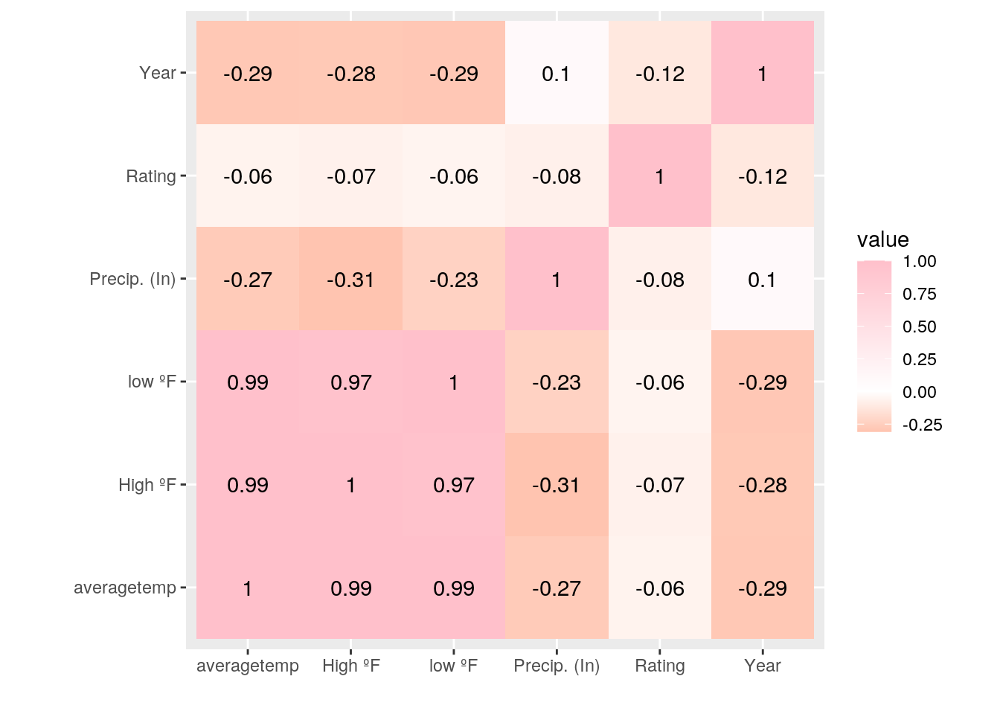
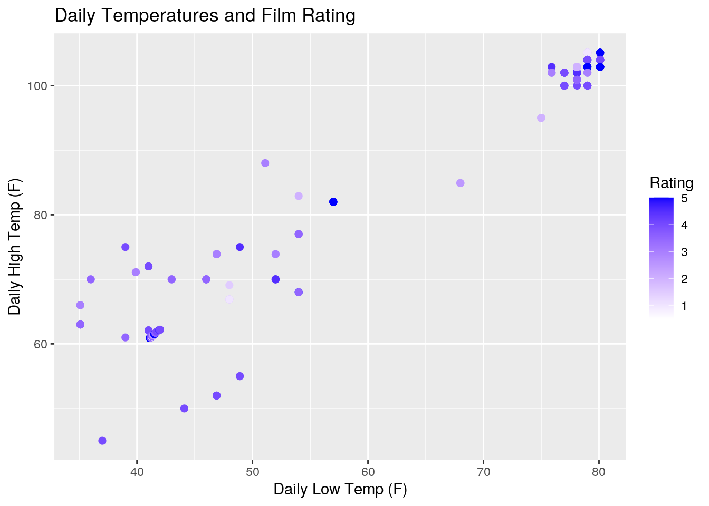
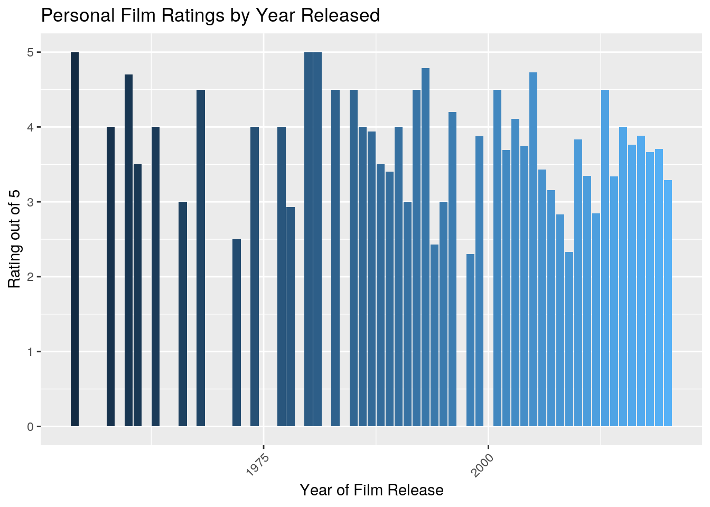
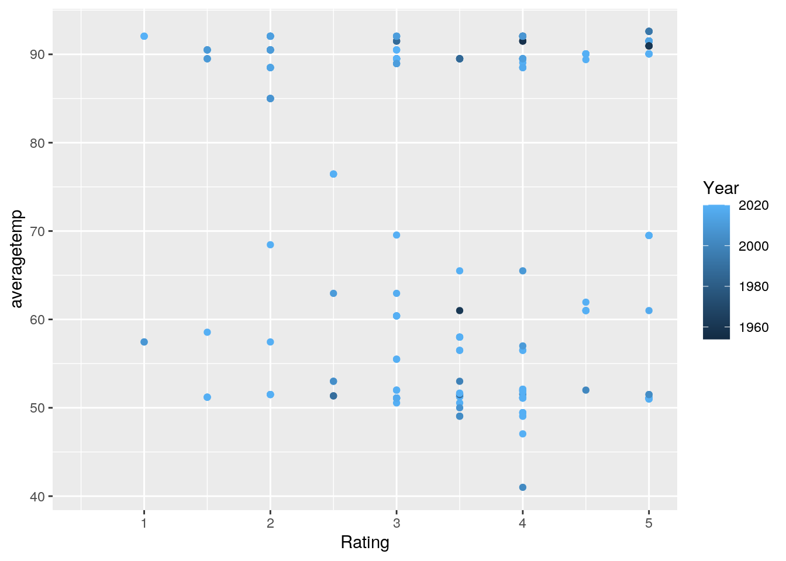

For this project, I've chosen to use my Letterboxd.com data as well as weather data in Austin, TX. Letterboxd.com is a website where I track the movie I watch. I can rate the movies out of 5 stars, log when I watch them, and I usually add tags to my reviews so I can easily track who I watched the film with, if it made me cry, where I watch the film, etc. I was able to export the data from the website. The variables include the date, the name of the film, the year the film came out, if I tagged the movie (like a hashtag), the rating out of five stars, the review I wrote, and if I was rewatching the movie or not. The weather data I collected was from wunderground.com. This icluded the highs, lows and percipitation for the day. I watch movies pretty regularly so I wasn't expecting any substantial associations.
library(tidyverse)
library("readxl")reviewsss <- read.csv("reviewsss.csv")
project1weather <- read_excel("Weather P1.xlsx")
write_excel_csv(reviewsss, "reviewsss.csv")
write_excel_csv(project1weather, "project1weather.xlsx")This is where I entered my csv and excel data files.
project1weather$date <- as.factor(project1weather$date)
# Left join data
proj1joined <- left_join(reviewsss, project1weather, by = c(Date = "date"))
# altering my data set to add separate rows rather than a
# list of movie Tags.
proj1joined$Tags <- as.character(proj1joined$Tags)
Project1 <- proj1joined %>% separate_rows(Tags, sep = ", ")I did a left join on these two data sets. I wan't to maintain all of the data from "reviewsss". I only needed weather data for the dates in which I reviewed a movie. Reviews originally had 177 observations and Weather_P1 originally had 239 observations. The joined data set includes 177 total observations. This means that 33 obervations were dropped, all from the Weather_P1 dataset.
# summary statistics for High ºF
Project1 %>% summarize(mean(`High ºF`, na.rm = T), sd(`High ºF`,
na.rm = T), min(`High ºF`, na.rm = T), max(`High ºF`, na.rm = T),
quantile(`High ºF`, na.rm = T))## # A tibble: 5 x 5
## `mean(\`High ºF… `sd(\`High ºF\`… `min(\`High ºF\… `max(\`High ºF\…
## <dbl> <dbl> <dbl> <dbl>
## 1 85.1 19.1 45 105.
## 2 85.1 19.1 45 105.
## 3 85.1 19.1 45 105.
## 4 85.1 19.1 45 105.
## 5 85.1 19.1 45 105.
## # … with 1 more variable: `quantile(\`High ºF\`, na.rm = T)` <dbl># summary statistics for low ºF
Project1 %>% summarize(mean(`low ºF`, na.rm = T), sd(`low ºF`,
na.rm = T), min(`low ºF`, na.rm = T), max(`low ºF`, na.rm = T),
quantile(`low ºF`, na.rm = T))## # A tibble: 5 x 5
## `mean(\`low ºF\… `sd(\`low ºF\`,… `min(\`low ºF\`… `max(\`low ºF\`…
## <dbl> <dbl> <dbl> <dbl>
## 1 62.5 17.7 35.1 80.1
## 2 62.5 17.7 35.1 80.1
## 3 62.5 17.7 35.1 80.1
## 4 62.5 17.7 35.1 80.1
## 5 62.5 17.7 35.1 80.1
## # … with 1 more variable: `quantile(\`low ºF\`, na.rm = T)` <dbl># summary statistics for Year the film was released
Project1 %>% summarize(mean(Year, na.rm = T), sd(Year, na.rm = T),
min(Year, na.rm = T), max(Year, na.rm = T), quantile(Year,
na.rm = T))## # A tibble: 5 x 5
## `mean(Year, na.… `sd(Year, na.rm… `min(Year, na.r… `max(Year, na.r…
## <dbl> <dbl> <int> <int>
## 1 2010. 13.9 1954 2020
## 2 2010. 13.9 1954 2020
## 3 2010. 13.9 1954 2020
## 4 2010. 13.9 1954 2020
## 5 2010. 13.9 1954 2020
## # … with 1 more variable: `quantile(Year, na.rm = T)` <dbl># summary statistics for precipitation
Project1 %>% summarize(mean(`Precip. (In)`, na.rm = T), sd(`Precip. (In)`,
na.rm = T), min(`Precip. (In)`, na.rm = T), max(`Precip. (In)`,
na.rm = T), quantile(`Precip. (In)`, na.rm = T))## # A tibble: 5 x 5
## `mean(\`Precip.… `sd(\`Precip. (… `min(\`Precip. … `max(\`Precip. …
## <dbl> <dbl> <dbl> <dbl>
## 1 0.0277 0.0928 0 0.7
## 2 0.0277 0.0928 0 0.7
## 3 0.0277 0.0928 0 0.7
## 4 0.0277 0.0928 0 0.7
## 5 0.0277 0.0928 0 0.7
## # … with 1 more variable: `quantile(\`Precip. (In)\`, na.rm = T)` <dbl># summary statistics for Ratings (out of five stars)
Project1 %>% summarize(mean(Rating, na.rm = T), sd(Rating, na.rm = T),
min(Rating, na.rm = T), max(Rating, na.rm = T), quantile(Rating,
na.rm = T))## # A tibble: 5 x 5
## `mean(Rating, n… `sd(Rating, na.… `min(Rating, na… `max(Rating, na…
## <dbl> <dbl> <dbl> <dbl>
## 1 3.62 1.07 0.5 5
## 2 3.62 1.07 0.5 5
## 3 3.62 1.07 0.5 5
## 4 3.62 1.07 0.5 5
## 5 3.62 1.07 0.5 5
## # … with 1 more variable: `quantile(Rating, na.rm = T)` <dbl>These are the summary statistics for my all of my numeric value. All values are listed in order of mean, sd, min, max and quantile.
The value 'High ºF' describes the highest predicted temperature for the day. High ºF: mean: 85.1, sd: 19.08, min: 45, max: 105.1, quantile: 45, 62.15, 100.00, 102.9, 105.1
The value 'low ºF' describes the lowest predicted temperature for the day. Low ºF: mean: 62.4, sd: 17.7, min: 35.1, max: 80.1, quantile: 35.1, 41.5, 75.9, 79.0, 80.1
The value 'Year' describes the year in which the film I watched came out. Year: mean: 2009.8, sd: 13.8, min: 1954, max: 2020, quantile: 1954, 2016, 2017, 2019, 2020
The value 'Precip. (In)' describes the precipitation in inches for each day. Year: mean: 0.027, sd: 0.092, min: 0, max: 0.7, quantile: 0.0, 0.0, 0.0, 0.0, 0.7
The value 'Rating' describes the rating out of 5 stars that I assigned each film. Year: mean: 3.6, sd: 1.06, min: 0.5, max: 5, quantile: 0.5, 3.0, 4.0, 4.5, 5
# Summary statistics for `High ºF` when grouped by Tags
Project1 %>% group_by(Tags) %>% summarize(mean(`High ºF`, na.rm = T),
sd(`High ºF`, na.rm = T), min(`High ºF`, na.rm = T), max(`High ºF`,
na.rm = T), quantile(`High ºF`, na.rm = T))## # A tibble: 195 x 6
## # Groups: Tags [39]
## Tags `mean(\`High ºF… `sd(\`High ºF\`… `min(\`High ºF\… `max(\`High ºF\…
## <chr> <dbl> <dbl> <dbl> <dbl>
## 1 936 81.2 19.7 52 105.
## 2 936 81.2 19.7 52 105.
## 3 936 81.2 19.7 52 105.
## 4 936 81.2 19.7 52 105.
## 5 936 81.2 19.7 52 105.
## 6 ace NaN NA Inf -Inf
## 7 ace NaN NA Inf -Inf
## 8 ace NaN NA Inf -Inf
## 9 ace NaN NA Inf -Inf
## 10 ace NaN NA Inf -Inf
## # … with 185 more rows, and 1 more variable: `quantile(\`High ºF\`, na.rm =
## # T)` <dbl># Summary statistics for `Ratings` when grouped by Tags
Project1 %>% group_by(Tags) %>% summarize(mean(Rating, na.rm = T),
sd(Rating, na.rm = T), min(Rating, na.rm = T), max(Rating,
na.rm = T), quantile(Rating, na.rm = T))## # A tibble: 195 x 6
## # Groups: Tags [39]
## Tags `mean(Rating, n… `sd(Rating, na.… `min(Rating, na… `max(Rating, na…
## <chr> <dbl> <dbl> <dbl> <dbl>
## 1 936 3.52 1.12 0.5 5
## 2 936 3.52 1.12 0.5 5
## 3 936 3.52 1.12 0.5 5
## 4 936 3.52 1.12 0.5 5
## 5 936 3.52 1.12 0.5 5
## 6 ace 3.5 NA 3.5 3.5
## 7 ace 3.5 NA 3.5 3.5
## 8 ace 3.5 NA 3.5 3.5
## 9 ace 3.5 NA 3.5 3.5
## 10 ace 3.5 NA 3.5 3.5
## # … with 185 more rows, and 1 more variable: `quantile(Rating, na.rm =
## # T)` <dbl>The code above includes the summary statistics for High ºF when grouped by Tags as well as the summary statistics for Ratings when grouped by Tags. There are over a dozen Tag options, and the data can be found above.
# average rating for movies with year 2019
Project1 %>% filter(Year == "2019") %>% summarize(mean(Rating,
na.rm = T))## # A tibble: 1 x 1
## `mean(Rating, na.rm = T)`
## <dbl>
## 1 3.71# This is the max precipitation for the first 20 rows
Project1 %>% slice(1:20) %>% summarize(max(`Precip. (In)`, na.rm = T))## # A tibble: 1 x 1
## `max(\`Precip. (In)\`, na.rm = T)`
## <dbl>
## 1 0.13# highest rated films that came out in 2019 according to me
# and when the high temp was greater than 60 degrees!
Project1 %>% filter(Year == "2019" & `High ºF` >= 60) %>% summarise(max(Rating,
na.rm = T))## # A tibble: 1 x 1
## `max(Rating, na.rm = T)`
## <dbl>
## 1 5# Arranged movie names in alphabetical order, then desc low
# temp and then the mean of the low temp
Project1 %>% arrange(-desc(Name), desc(`low ºF`)) %>% summarize(mean(`low ºF`,
na.rm = T))## # A tibble: 1 x 1
## `mean(\`low ºF\`, na.rm = T)`
## <dbl>
## 1 62.5# Try grouping by two categorical veriables
Project1 %>% group_by(Rewatch, Tags) %>% summarise(mean(Rating,
na.rm = T))## # A tibble: 59 x 3
## # Groups: Rewatch [2]
## Rewatch Tags `mean(Rating, na.rm = T)`
## <fct> <chr> <dbl>
## 1 Yes 936 3.78
## 2 Yes ace 3.5
## 3 Yes atx 3.12
## 4 Yes bee hive 3.97
## 5 Yes bre myself and i 3.92
## 6 Yes ho time 4.04
## 7 Yes i'm on a true crime kick 3.83
## 8 Yes i'm the map 4
## 9 Yes im a bell 4
## 10 Yes im a cry baby 4.18
## # … with 49 more rowsUsing the filter function, I was able to determine that the mean rating for films I watched that were released in 2019 was 3.7 stars. Using slice to view the first twenty lines, the max percipitation was 0.13 inches. Using the filter function, I was able to determine that the max rating that I gave for a 2019 movie when the temperature high was above 60 degrees was 5 stars. I then Arranged movie names in alphabetical order, then desc low temp and then the mean of the low temp and found that it was 62.54. I then grouped by rewatch and tags and summarized the mean datas for those.
# proof I know how to use Pivot wider
wideproj1 <- proj1joined %>% separate_rows(Tags, sep = ", ") %>%
pivot_wider(names_from = "Tags", values_from = "Name")
# Added a new column for average temp of the day and various
# summary stats
Project.1 <- Project1 %>% mutate(averagetemp = ((`low ºF` +
`High ºF`)/2))
# Selected variables date, high, low and precip, groupbyed by
# average temp and then summarized the min rating
Project.1 %>% select(Name, Rating, `High ºF`, `low ºF`, Date,
averagetemp) %>% summarize(sd(averagetemp, na.rm = T))## # A tibble: 1 x 1
## `sd(averagetemp, na.rm = T)`
## <dbl>
## 1 18.3# deleting coulums I don't want
Project.1$meanyear <- NULL
Project.1$`Letterboxd URI` <- NULLThis was where I proved that I knew how to use Pivot wider. I then added a new column to find the average temperature for each day. I then summarized the standard deviation of this and found that it was 18.3 degrees. I deleted a two columns that I would not be using in this project.
# correlation matrix
corproj1 <- Project.1 %>% select_if(is.numeric) %>% cor(use = "pair")This is my correlation matrix that it was suggested to make.
# Make a correlation heatmap of your numeric variables
Project.1 %>% select_if(is.numeric) %>% cor(use = "pair") %>%
as.data.frame %>% rownames_to_column %>% pivot_longer(-1) %>%
ggplot(aes(rowname, name, fill = value)) + geom_tile() +
geom_text(aes(label = round(value, 2))) + xlab("") + ylab("") +
coord_fixed() + scale_fill_gradient2(low = "red", mid = "white",
high = "pink") This is my correlation matrix. My negative correlations are in orange and my positive correlations are pink. Correlations closer to zero are white and off white. All of my temperature datas besides the precipitation had positive correlations, and so did year and precipitation. Everything else had negative correlations.
# geom point
ggplot(Project.1, aes(`low ºF`, `High ºF`)) + geom_point(size = 2,
aes(color = Rating)) + scale_color_gradient(low = "white",
high = "blue") + ggtitle("Daily Temperatures and Film Rating") +
xlab("Daily Low Temp (F)") + ylab("Daily High Temp (F)")
# geom bar
ggplot(Project.1, aes(x = Year, fill = Year)) + geom_bar(aes(y = Rating),
stat = "summary", fun = mean) + theme(axis.text.x = element_text(angle = 45,
hjust = 1), legend.position = "none") + ggtitle("Personal Film Ratings by Year Released") +
xlab("Year of Film Release") + ylab("Rating out of 5") The geom_point graph is displaying daily low temperatures and daily high temperatures. It is colored by the rating of the film that I watched on that day. The higher rated films are dark blue and the lower rated films are white. I was attempting to see if there was a correlation between film ratings and temperature outside, but all I can conclude is that I watch a lot of movies when it's hot outside, which is a valid assumption giving that I live in Austin, TX.
The geom_bar graph shows the average rating of the year in which I've watched a film. Year of film release is in the x-axis and the rating out of 5 is on the y-axis. I seem to have watched more films that were released in the 80s-present day, which makes sense for my age. Between 1954 and 1975, I've only seen movies that have came out in nine different years. There doesn't seem to be a major assumption that can be drawn from the relationship between ratings and year of film release date.
# install.packages('cluster') if you need to
library(cluster)
pam1 <- Project.1 %>% pam(k = 3)
pam1## Medoids:
## ID Date Name Year Letterboxd.URI Rating Rewatch Review Tags Watched.Date
## [1,] 245 78 136 2016 147 2.0 1 166 936 73
## [2,] 406 103 56 1996 58 4.5 NA 120 936 95
## [3,] 449 111 179 2020 196 3.0 NA 61 936 102
## High ºF low ºF Precip. (In) averagetemp
## [1,] NA NA NA NA
## [2,] NA NA NA NA
## [3,] NA NA NA NA
## Clustering vector:
## [1] 1 1 1 1 1 1 1 1 1 1 1 1 1 1 1 1 2 2 2 2 1 1 2 2 2 2 2 2 1 2 2 2 3 3 1 1 2
## [38] 1 2 1 2 2 2 2 1 2 2 2 2 1 1 1 3 3 1 2 2 1 1 2 1 2 3 3 2 2 3 3 3 3 3 3 3 3
## [75] 3 1 1 1 1 3 1 1 1 1 1 2 2 2 2 2 3 3 3 3 3 3 3 3 2 2
## [ reached getOption("max.print") -- omitted 676 entries ]
## Objective function:
## build swap
## 121.0764 119.9862
##
## Available components:
## [1] "medoids" "id.med" "clustering" "objective" "isolation"
## [6] "clusinfo" "silinfo" "diss" "call" "data"pamclust <- Project.1 %>% mutate(cluster = as.factor(pam1$clustering))
pamclust %>% ggplot(aes(Rating, averagetemp, color = Year)) +
geom_point()
pamclust %>% group_by(cluster) %>% summarize_if(is.numeric, mean,
na.rm = T)## # A tibble: 3 x 7
## cluster Year Rating `High ºF` `low ºF` `Precip. (In)` averagetemp
## <fct> <dbl> <dbl> <dbl> <dbl> <dbl> <dbl>
## 1 1 2008. 3.73 80.5 58.0 0.0264 69.3
## 2 2 2010. 3.62 81.6 58.8 0.0171 70.2
## 3 3 2011. 3.52 93.1 70.5 0.0396 81.8pam1$silinfo$avg.width## [1] 0.2717471Clusters were formed by grouping data points to the nearest medoid. The data appears to be rather split, and there doesn't seem to be any major correlation between the year in which the film came out when compared across the board for ratings and averagetemperature. The average silhouette width is 0.667, which indicates that a resonable sttucture has been found.